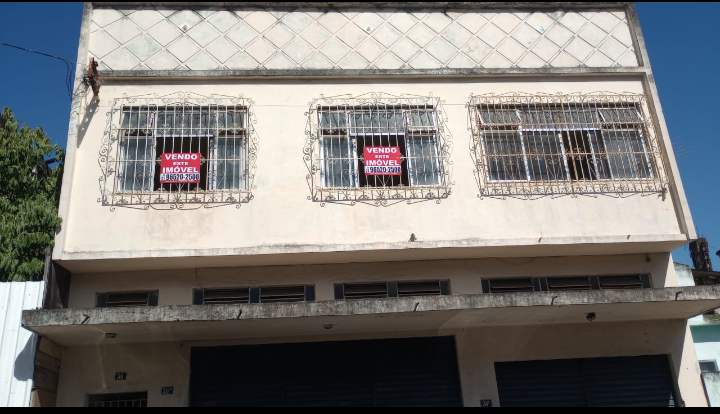
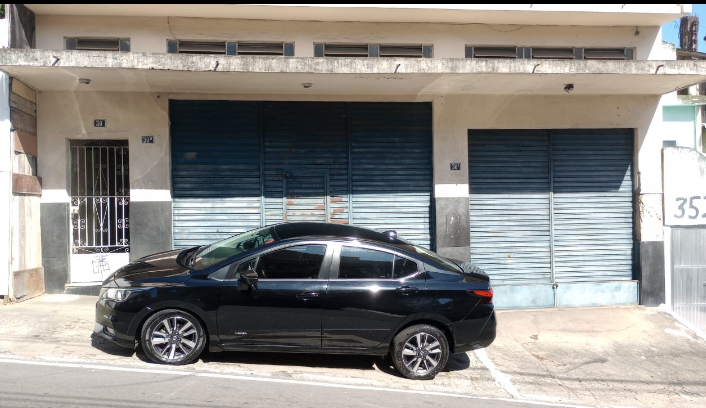
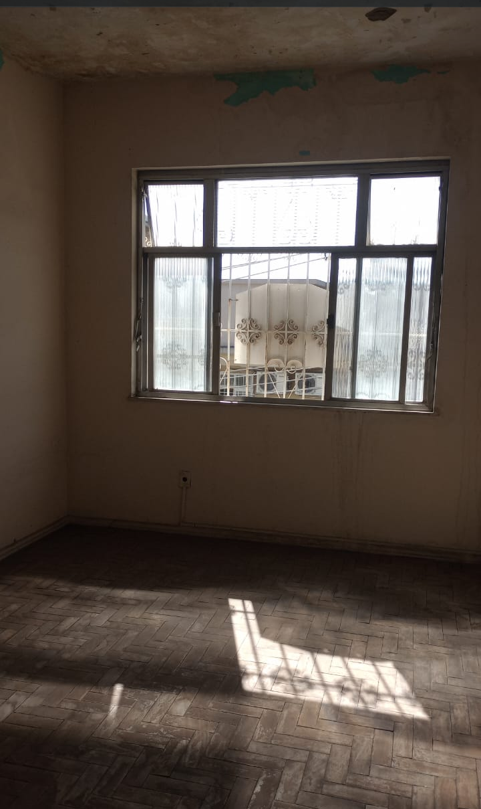
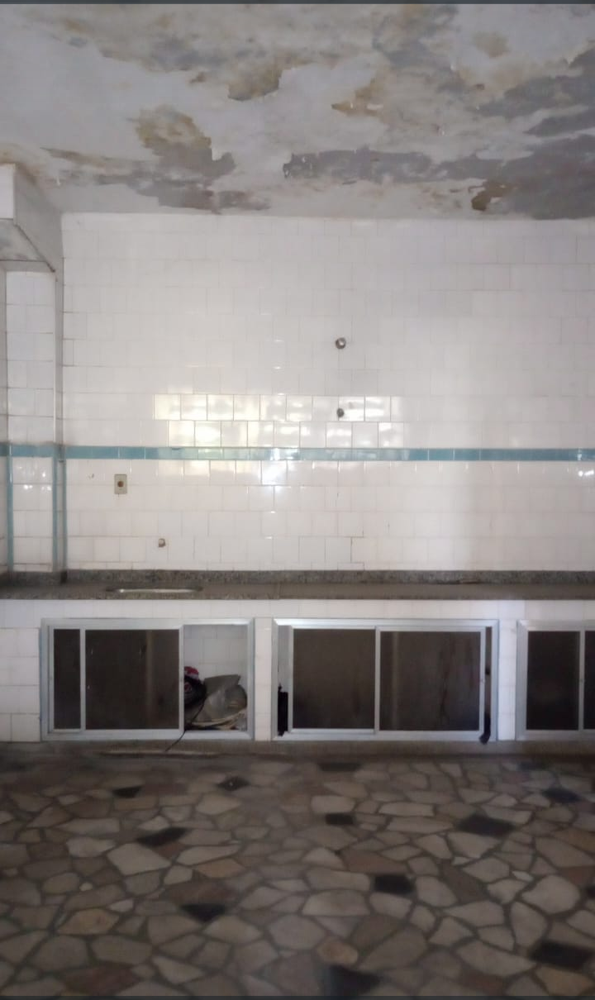
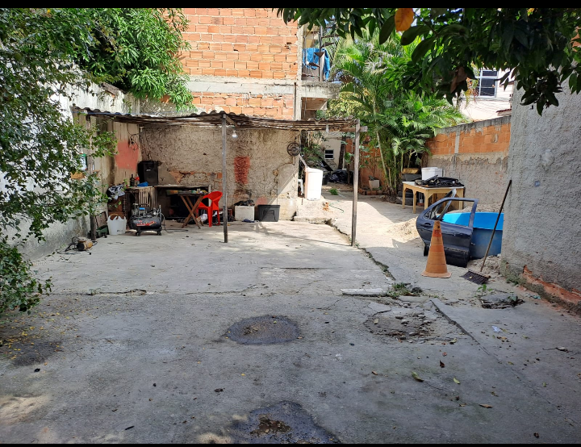
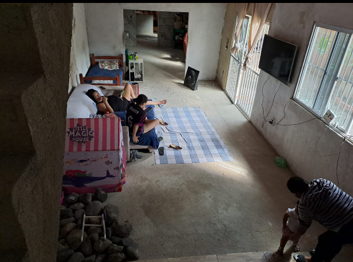
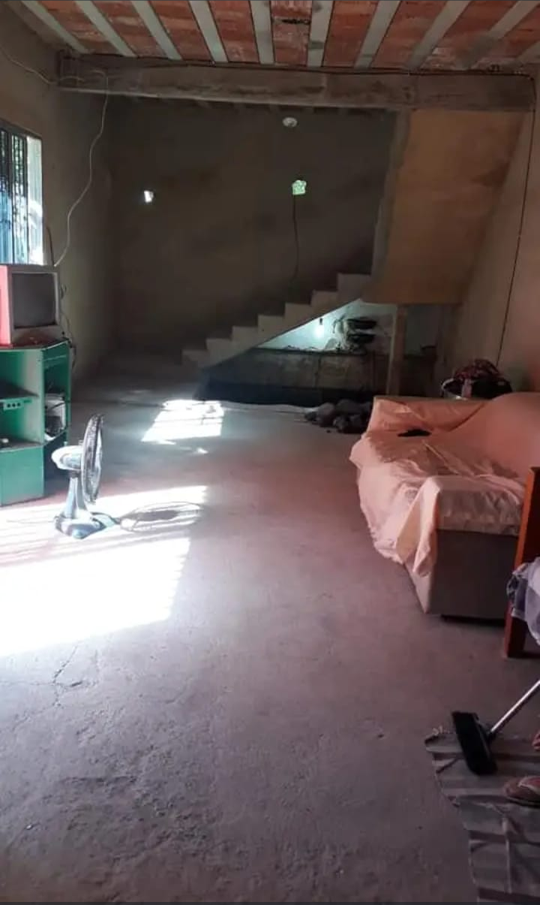
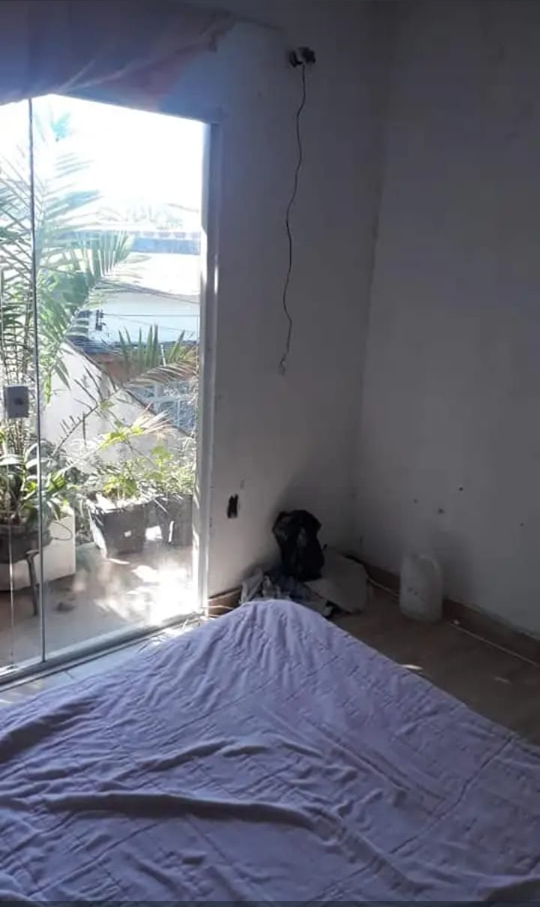

Avulsos
Imóvel 1
Valor: R$ 300.000,00
Terreno com 360m² (12x30), próximo à estação Jardim Primavera.
Com duas casas independentes:
- Casa 1: 3 quartos, sala ampla, cozinha, banheiro e varanda.
- Casa 2: 2 quartos, sala, cozinha, banheiro e varanda.
Quintal amplo nos fundos, com poço artesiano. Ideal para lazer, horta ou novas construções.
Ótima opção para morar, investir ou gerar renda com aluguel.
Imóvel 2
Valor: R$ 370.000,00
Localização privilegiada, em frente à Unigranrio.Imóvel composto por 2 kitnets e 1 casa com suíte.
Ideal para estudantes ou investidores.
Imóvel 3
Valor: R$ 380.000,00
Casa com 2 quartos, quintal e garagem.
Localizada em bairro tranquilo e com infraestrutura completa.
Imóvel 4
Valor: R$ 650.000,00
Apartamento com 3 quartos, sendo 1 suíte, vaga de garagem e varanda gourmet.
Localizado próximo ao centro.
Imóvel 5
Valor: R$ 500.000,00
Sobrado com 4 quartos, escritório, garagem para 3 carros, área gourmet e churrasqueira.
Imóvel 6
Valor: R$ 735.000,00
Casa térrea com 3 quartos, cozinha planejada e lavanderia coberta.
Localizada próxima a escolas e ao comércio.
Imóvel 7
Valor: R$ 530.000,00
Apartamento no Condomínio Amazonas – Duque de Caxias/RJ.
Localizado no 4º andar, com sol da manhã, bem iluminado e arejado.
Possui 2 quartos, sendo 1 suíte com ar-condicionado e armários planejados.
Sala ampla com cerâmica tipo tijolinho, teto rebaixado em gesso e piso em porcelanato.
Varanda charmosa, ideal para momentos relaxantes.
Cozinha espaçosa e ventilada, com área de serviço integrada.
Banheiro social confortável e funcional.
1 vaga de garagem
Imóvel 8
Valor: R$ 720.000,00
Três casas independentes no mesmo terreno, localizadas na Rua das Acácias – Jardim Primavera:
Casa 1 – Térrea e funcional: 2 quartos, sala arejada, cozinha prática, banheiro social e varanda.
Valor individual: R$ 250.000,00
Casa 2 – Aconchego e simplicidade: 1 quarto, sala, cozinha, banheiro e varanda.
Valor individual: R$ 170.000,00
Casa 3 – Sofisticação no segundo andar: Suíte master com banheiro espaçoso, banheira de hidromassagem e espaço para closet.
Valor individual: R$ 300.000,00
Imóvel 9
Valor: R$ 600.000,00
Rua Leopoldo Miguez, próximo à Av. Automóvel Clube e do Posto São Jorge.
Casa com 4 quartos (sendo 1 suíte), sala ampla com 86m², cozinha planejada, lavabo e banheiro social.
Área externa com piscina, espaço gourmet e quintal com capacidade para até 8 carros.
Acabamentos de alto padrão e localização excelente.
Mais informações pelo whatsapp.
Imóvel 10
Valor: R$ 680.000,00
Linda casa de 2 quartos, localizada na Vila Itamarati - Duque de Caxias.
Imóvel com loja na frente: conforto, renda extra e excelente localização!
Está procurando mais do que uma casa?
Que tal um lar completo, com espaço, lazer e ainda a oportunidade de empreender ou garantir uma renda extra?
Esse imóvel tem tudo isso e muito mais!
Confira os destaques:
- 2 quartos aconchegantes, prontos para acolher sua familia.
- Sala ampla com porta de blindex, perfeita para momentos especiais.
- Cozinha moderna, com pia em granito e revestimento até o teto.
Imóvel 11
Valor: R$ 950.000,00
Rua Lomas Valentinas, 60 -Jardim Vinte e Cinco de Agosto.
Casa totalmente plana, sem escadas ou desníveis, projetada para oferecer liberdade e praticidade.
São 3 quartos amplos e iluminados, além de uma sala majestosa, com impressionantes 28m².
A área de serviço é espaçosa e arejada.O quintal convida a momentos de descontração, sol e liberdade.
Na frente,um jardim encantador com vasos decorativos dá um toque especial de carinho e beleza.
Localizada em bairro reservado, seguro e totalmente familiar,com vigilância 24 horas, portões de acesso controlado e guarita na entrada.
Agente sua visita.
Imóvel 12
Valor:R$ 2.890.000,00
Encante-se com esta jóia rara no condomínio Santa Mônica Residências - Rua Pedro Ludovico, 195,Barra da Tijuca.
Na área externa frontal, o charme do jardim com fonte decorativa combina com a funcionalidade da cisterna de 15 mil litros.
Nos fundos, o lazer é completo: piscina, churrasqueira com bancada de apoio, sauna a vapor com chuveiro, além de banheiro e chuveiro externo para maior comodidade.
No segundo pavimento, a casa oferece duas suítes confortáveis, sendo uma suíte master com closets espaçosos, banheiro de corredor e um mezanino encantador, ideal como sala íntima ou escritório.
O terceiro pavimento garante ainda mais privacidade, com dois quartos (um com closet), banheiro completo e uma sala íntima acolhedora, perfeita para relaxar, meditar ou criar um espaço de leitura.
Imóvel 13
Valor: R$ 10.000.000,00
Imóvel amplo com quadra coberta - ideal para escolas, igrejas, clínicas, hospitais ou e...
Prédio com 3 pavimentos estruturados,Diversas salas amplas, bem ventiladas e com iluminação natural.
Muro alto com cerca de segurança e sistema básico instalado.
Inúmeras possibilidades de uso:
- Local com infraestrutura urbana consolidada e fácil acesso
- Estrutura adaptável para atender normas sanitárias e acessibilidade.
- Espaços amplos que favorecem projetos de reforma ou personalização.
- A quadra coberta pode ser aproveitada para atividades físicas, encontros ou transformada em estacionamento coberto.
Este é o tipo de imóvel que oferece flexibilidade, segurança e ótimo custo-benefício, ideal para investidores ou operações já consolidadas.
Entre em contato e agende uma visita para conhecer de perto esse imóvel que pode ser a base do seu próximo grande projeto!
Imóvel 14
Valor: R$ 2.500.000,00
Galpão Comercial à Venda em Duque de Caxias - esquina estratégica com grande potencial!
Localizado na movimentada Rua Manuel Telles, em Duque de Caxias.
Este galpão é como uma tela em branco, pronto para receber um novo projeto de sucesso.
Com visão e criatividade, pode se transformar em um ponto de referência na cidade.
Agende uma visita.
Imóvel 15
Valor: R$ 750.000,00
Lindo imóvel de 5 quartos, localizado na Rua João Teles - Parque Centenário.
Mansão histórica e imponente em Duque de Caxias - antiga residência do ex-prefeito Juberlan de Oliveira.
Oportunidade única de adquirir uma mansão de alto padrão, com valor histórico, localizada em uma das regiões mais tradicionais da cidade.
Este imóvel foi residência do ex-prefeito Juberlan de Oliveira, que governou o município entre 1986 e 1988, marcando um período importante na história política local.
Com projeto arquitetônico diferenciado e ambientes amplos, a propriedade oferece muito conforto e exclusividade.
Imóvel 16
Valor: R$ 900.000,00
Seu novo lar no Jardim 25 de Agosto - Duque de Caxias.
Casa espaçosa na Rua Marcílio Dias, próximo da Praça da Maçonaria e do Hospital Mário Lioni.
São 3 quartos, sendo 1 suíte com closet e banheira.
Sala ampla, cozinha grande, terraço gourmet para 120 pessoas.
Conta ainda com 2 vagas de garagem, muito potencial e excelente localização!
Imóvel 17
Valor: R$ 1.000.000,00
Oportunidade na Rua General Mitre-740, atrás do Caxias D’Or e ao lado do HSCOR!
Casa com 3 quartos, 2 salas, terraço, quintal, cisterna de 19 mil litros e garagem para 3 carros.
Terreno com 360m². Casa nos fundos ideal para aluguel ou escritório.
Precisa de reforma.
Imóvel 18
Valor: R$ 900.000,00
Terreno de 500m² na Vila Itamaraty, próximo ao SASE e ao Centro de Caxias.
Região estratégica, com ótimo fluxo de veículos.
Possui duas casas construídas no terreno.
Ideal para galpões, empresas ou investidores.
Agende sua visita!
Imóvel 19
Valor: R$ 900.000,00
Duque de Caxias - Jardim Vinte e Cinco de Agosto.
Imóvel muito bem localizado,em bairro nobre, rua tranquila e arborizada.
Composto por 2 quartos, sendo 1 suíte com closet.
Dependência completa de empregada no terraço.
Sala ampla, cozinha espaçosa com armários planejados e coifa.
Banheiro social com blindex, 3 vagas de garagem, piscina e terraço coberto com área gourmet.
Possui sistema de energia fotovoltaica. Ambiente com sala, suíte e cozinha projetados por arquitetos.
Incluso todos os embutidos,Documentação cristalina.
Mais informações pelo whatsapp.
Imóvel 20
Valor: R$ 200.000,00
Bairro Marechal Deodoro - Duque de Caxias.
Flat com 1 quarto, varanda, vaga de garagem e portaria 24hs.
Condomínio com infraestrutura de lazer: clube,sauna, piscina, elevadores.
Condomínio: R$ 800,00
IPTU: R$ 1.100,00 por ano.
Próximo a INSS, Caixa, faculdades e estação.
Mais informações pelo whatsapp.
Imóvel 21
Valor: R$ 480.000,00
Rua Barbosa Rodrigues,Duque de Caxias.
Imóvel espaçoso e sofisticado, ideal para quem busca conforto e tranquilidade.
Ambientes amplos e bem iluminados, com piso laminado e acabamento de qualidade.
Cozinha planejada, área de serviço funcional e escadas em granito.
Quartos amplos, incluindo um suíte no andar térreo; outros quartos no segundo andar com varanda e vista panorâmica
Acabamento moderno com armários planejados, janelas de blindex e ar-condicionado.
Situado em rua tranquila, com duas casas no terreno, oferecendo exclusividade e segurança.
Mais informações pelo whatsapp.
Imóvel 22
Valor: R$ 250.000,00
Rua Doutor Manoel Telles .
Apartamento de 2 quartos no Condomínio Vitória
Com piso laminado e acabamento de qualidade,com sala, cozinha, banheiro com blindex, área de serviço e varanda.
Piso porcelanato, teto rebaixado em gesso e iluminação em LED.
Condomínio com portaria 24h, lazer completo e áreas comuns revitalizadas.
Mais informações pelo whatsapp.
Imóvel 23




Valor: R$ 990.000,00
Prédio de 2 andares na Rua Piauí, nº 30, localizado no Centro de Caxias.
Possui duas lojas (70m² e 54m²) no térreo e um amplo apartamento de 135m² com 3 quartos, sala, cozinha, hall, banheiro e área de serviço.
Nos fundos, terreno plano de 250m² com árvores frutíferas, ideal para construir ou ampliar.
Mais informações pelo whatsapp.
Imóvel 24




Valor:R$1.150.000,00
Rua Barbosa Rodrigues, nº 33, Parque Duque - Duque de Caxias.
Casa ampla com 3 quartos, sala com espelho d’água sob a escada, cozinha espaçosa.
Quintal com árvores frutíferas (coco, seriguela), garagem para 4 carros e kitnet nos fundos.
Obras inacabadas — perfeita para personalizar e transformar no seu lar!
Mais informações pelo whatsapp.
Imóvel 25
Valor:R$ 650.000,00
Rua General Dionísio, junto à Praça do Humaitá- Duque de Caxias.
Amplo apartamento com 4 quartos (1 suíte), sala espaçosa, cozinha e área de serviço arejadas, banheiro social e de serviço.
Bem ventilado e iluminado, oferece conforto e praticidade. Localização privilegiada
Mais informações pelo whatsapp.
Imóvel 26
Valor:R$10.000.000,00
Início da Brigadeiro Lima e Silva, perto da Washington Luiz e da Polícia Técnica de Caxias.
Prédio de 5 andares em um Terreno de 360 m².
Fachada em pastilha e granito, elevador preparado.
Falta acabamento interno. Localização valorizada e estratégica!
Mais informações pelo whatsapp.
Imóvel 27
Valor:R$ 2.500.000,00
Localizado na esquina da Ampliato Cabral com a Rua General Câmara em Caxias.
Galpão 12x30, todo murado, com cobertura e portão de garagem.
Atualmente funciona como estacionamento , excelente ponto comercial, ideal para qualquer atividade.
Localização valorizada e estratégica!
Mais informações pelo whatsapp.
Imóvel 28
Valor:R$ 2.200.000,00
Rua Ampliato Cabral com Rua Marcílio Dias, perto do Mário Leone e da Praça da Marçonaria , em Caxias.
Casa imponente de esquina, com 7 quartos, 2 salas, 2 banheiros sociais, terraço, jardim com palmeiras.
Dependência e garagem para 5 carros. Ideal pra morar ou investir!
Mais informações pelo whatsapp.
Imóvel 29
Valor:R$ 250.000,00
Rua Ana Porto, a passos da Nilo Peçanha e da Igreja Universal , no centro de Caxias.
São duas casas com 2 quartos cada, podendo virar 4 unidades ou ser unificada. Ideal para morar ou investir.
Localização estratégica e com grande potencial!
Mais informações pelo whatsapp.
Imóvel 30
Valor:R$ 380.000,00
Terreno plano de 10×40 m na Rua Adélia Lopes, situado no bairro Dr. Laureano, em Caxias.
Excelente para imóvel residencial ou comercial, com acesso fácil a transporte, escolas e comércios locais.
Oportunidade de investimento com documentação regularizada.
Mais informações pelo whatsapp.
Entre em Contato
💬